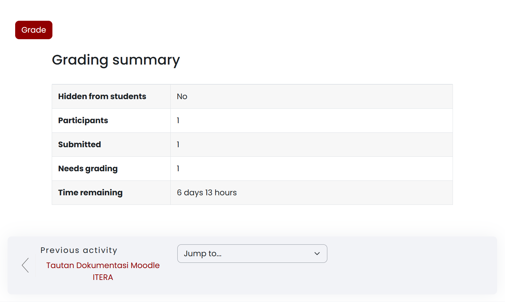
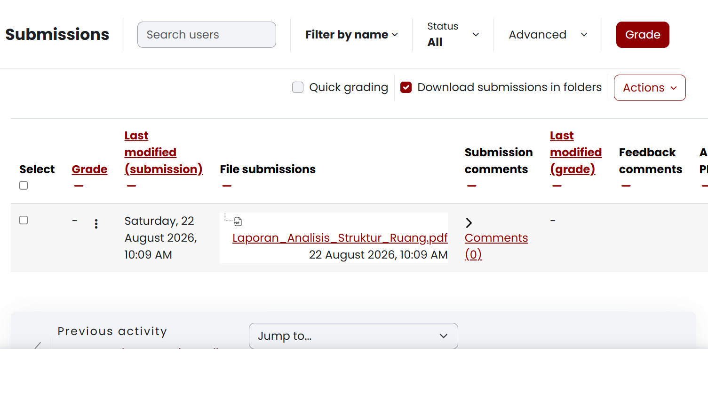
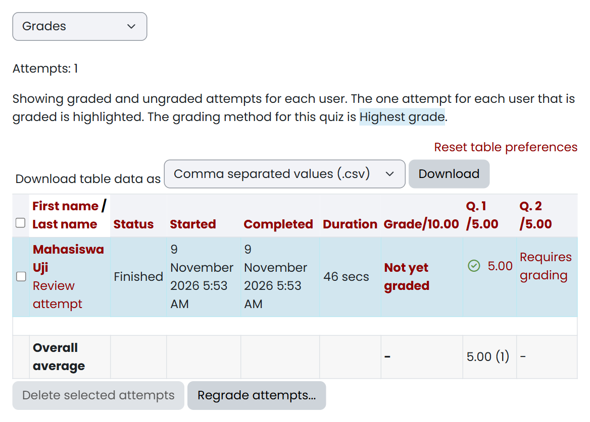
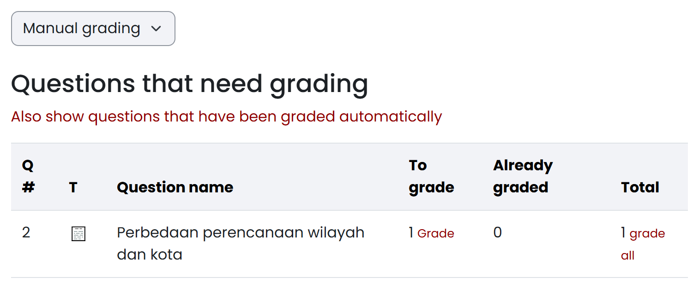
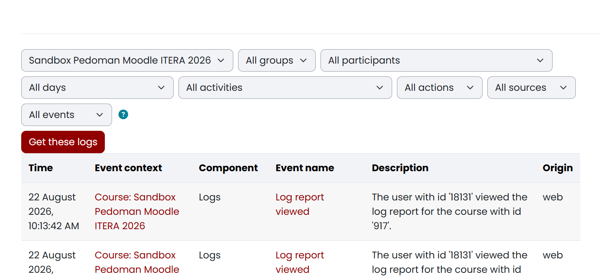

5 Memantau Pengumpulan Tugas, Pengerjaan Kuis, dan Jejak Aktivitas Mahasiswa
Setelah instrumen penugasan dan materi pembelajaran diterbitkan, dosen pengampu dan asisten pengajar perlu memantau progres penyerahan berkas tugas, memeriksa kepatuhan batas waktu (Due date), meninjau percobaan kuis, serta menelusuri keaktifan mahasiswa dalam mengakses bahan ajar.
Platform New E-Learning ITERA menyediakan ringkasan terpusat (Grading summary), tabel pemantauan pengumpulan (Submissions table), mekanisme perpanjangan batas waktu (Grant extension), laporan hasil kuis (Results), serta laporan jejak digital (Reports & Logs).
5.1 Memeriksa status dan kelengkapan pengumpulan tugas
Melalui halaman penugasan, Anda dapat memantau secara langsung jumlah mahasiswa yang sudah mengirimkan berkas (Submitted) dan berkas yang siap diperiksa (Needs grading). Modul penugasan (Assignment) harus sudah dibuat pada mata kuliah yang bersangkutan, dan Anda memerlukan peran Dosen (Teacher) atau Asisten Pengajar (Non-editing teacher) — keduanya dapat membuka ringkasan ini. Buka halaman utama mata kuliah, lalu ikuti langkah berikut:
- Klik nama penugasan yang dituju, misalnya
Tugas 1: Analisis Struktur Ruang Kota. - Perhatikan panel Grading summary yang merangkum kondisi kelas:
- Participants: Jumlah total mahasiswa yang terdaftar di kelas atau kelompok yang dipilih.
- Submitted: Jumlah mahasiswa yang telah berhasil mengunggah dan menyerahkan berkas tugas.
- Needs grading: Jumlah berkas tugas yang telah diserahkan namun belum diberi nilai.
- Time remaining: Sisa waktu pengerjaan tugas sebelum melewati batas tenggat (Due date).
- Untuk memeriksa rincian berkas dan status per mahasiswa, pilih tombol View all submissions atau gulir ke bawah halaman.
Panel Grading summary menyajikan rekapitulasi data kepesertaan, jumlah penyerahan tugas, serta sisa waktu pengumpulan seperti terlihat pada Gambar 5.1.

Jika angka Participants bernilai 0, periksa penyaring kelompok (Separate groups) di bagian atas halaman dan pastikan Anda memilih kelas paralel yang sesuai, misalnya Kelas RA atau All participants. Jika kolom Time remaining menampilkan tulisan berwarna merah seperti Assignment is overdue by ..., batas waktu Due date sudah berakhir dan penyerahan tugas baru akan dicatat terlambat. Setelah ringkasan ini terbaca, lanjutkan ke tabel daftar pengumpulan untuk memeriksa berkas yang diserahkan dan meninjau keterlambatan.
5.2 Memantau tabel pengumpulan dan penanda keterlambatan
Tabel pengumpulan (Submissions table) menampilkan rincian berkas yang diunggah mahasiswa, waktu pengiriman terakhir, serta status keterlambatan jika tugas dikirim setelah batas Due date. Anda perlu berada pada halaman rincian pengumpulan tugas (action=grading); dosen maupun asisten pengajar sama-sama berwenang mengunduh dan memeriksa berkas pengumpulan di sini. Buka Halaman Tugas → View all submissions, lalu ikuti langkah berikut:
- Gunakan penyaring di bagian atas tabel untuk menyaring tampilan:
- Filter by name: Menyaring mahasiswa berdasarkan huruf awal nama depan atau nama belakang.
- Status: Menyaring berdasarkan status penyerahan (Submitted, Not submitted, Requires grading, atau Granted extension).
- Periksa kolom-kolom utama tabel:
- Status: Menunjukkan status penyerahan, seperti
Submitted for grading(hijau),Draft(kuning), atauNo submission. - Last modified (submission): Mencatat tanggal dan jam persis mahasiswa mengunggah atau memperbarui berkas.
- File submissions: Memuat tautan nama berkas dokumen (misalnya
Laporan_Analisis_Struktur_Ruang.pdf) yang dapat diklik untuk diunduh. - Time remaining / Late: Jika mahasiswa mengumpulkan setelah Due date, sistem secara otomatis memberi tanda teks merah
Submitted ... late. Jika dikumpulkan lebih awal, sistem mencatatSubmitted ... early.
- Status: Menunjukkan status penyerahan, seperti
- Untuk mengunduh seluruh berkas mahasiswa sekaligus dalam satu berkas ZIP, pilih menu Actions di atas tabel, lalu pilih Download all submissions.
Tabel Submissions menyajikan daftar pengumpulan mahasiswa secara terstruktur lengkap dengan nama berkas, waktu pengiriman, dan status penyerahan seperti terlihat pada Gambar 5.2.

Jika berkas mahasiswa berstatus Draft (not submitted), mahasiswa baru mengunggah berkas ke draf penyimpanan tetapi belum menekan tombol konfirmasi Submit assignment — Anda dapat mengingatkan mahasiswa tersebut atau tetap menilai drafnya kalau batas waktu sudah habis. Jika tautan berkas di kolom File submissions tidak dapat diunduh, pastikan format berkas didukung dan koneksi jaringan stabil. Perlu diingat bahwa pengubahan pengaturan umum batas waktu tugas hanya dapat dilakukan peran Teacher, bukan Non-editing teacher. Kalau ada mahasiswa dengan kendala khusus yang sah, lanjutkan ke pemberian dispensasi perpanjangan waktu.
5.3 Mengatur perpanjangan waktu pengumpulan (Grant Extension)
Fitur Grant extension memungkinkan Anda memberikan perpanjangan batas waktu pengumpulan khusus kepada perorangan mahasiswa — misalnya karena sakit atau penugasan institusi — tanpa mengubah jadwal Due date bagi mahasiswa lain di kelas. Perhatikan bahwa tenggat yang berbeda antar kelas paralel bukan diatur lewat Grant extension, melainkan lewat Group overrides pada Assignment (lihat Bagian 4.2.4); Grant extension hanya untuk kasus perorangan. Mahasiswa yang bersangkutan harus sudah terdaftar pada mata kuliah dan penugasan tersebut, dan pemberian perpanjangan adalah kewenangan akademis dosen pengampu: Anda harus masuk dengan peran Teacher, karena Non-editing teacher tidak mempunyai izin ini. Buka Halaman Tugas → View all submissions, lalu ikuti langkah berikut:
- Cari baris mahasiswa yang akan diberikan perpanjangan waktu.
- Pada kolom Edit (ikon titik tiga ⋮ di samping kolom nilai), pilih opsi Grant extension.
- Pada formulir perpanjangan yang muncul, centang kotak Enable pada bagian Extension date.
- Tentukan tanggal dan jam batas akhir perpanjangan yang diizinkan.
- Pilih Save changes.
Pada baris mahasiswa tersebut, kolom status akan menampilkan penanda Extension granted until [Tanggal & Jam]. Mahasiswa itu dapat mengunggah berkas hingga batas perpanjangan tercapai tanpa ditandai terlambat.
Jika menu Grant extension tidak muncul pada baris mahasiswa, pastikan akun Anda berperan Teacher, bukan Non-editing teacher. Jika opsi tanggal tidak dapat diubah, pastikan kotak centang Enable di samping tanggal perpanjangan sudah diaktifkan. Setelah dispensasi diberikan, lanjutkan dengan memantau percobaan kuis agar nilai esai dan status pengerjaan tidak tertinggal.
5.4 Memantau percobaan dan hasil kuis
Berbeda dengan Assignment yang meninggalkan berkas, Quiz merekam jejak pengerjaan sebagai percobaan (attempt) yang tercatat otomatis. Melalui laporan hasil kuis, Anda dapat melihat berapa mahasiswa yang sudah mengerjakan, siapa yang belum mulai, berapa lama pengerjaannya, serta nilai setiap soal. Quiz harus sudah dibuat dan dijadwalkan lebih dahulu (Bagian 4.2.5). Peran Dosen (Teacher) maupun Asisten Pengajar (Non-editing teacher) sama-sama dapat membuka laporan ini. Buka halaman kuis, lalu ikuti langkah berikut:
- Pilih menu Results, lalu buka tab Grades.
- Perhatikan ringkasan Attempts: [jumlah] di atas formulir penyaring. Angka ini menunjukkan jumlah percobaan yang tercatat, sedangkan keterangan dalam tanda kurung menunjukkan porsi percobaan dari kelompok yang sedang dipilih.
- Atur formulir penyaring sesuai kebutuhan:
- Attempts from: Pilih
enrolled users who have a quiz attemptuntuk melihat peserta yang sudah mengerjakan, atauenrolled users who do not have a quiz attemptuntuk menemukan mahasiswa yang belum mencoba sama sekali. - Attempts that are: Saring berdasarkan status percobaan, yaitu
Not started,In progress,Overdue,Submitted,Finished, atauNever submitted. - Show at most one finished attempt per user: Tampilkan hanya satu percobaan terbaik bila kuis mengizinkan percobaan berulang, sesuai Grading method kuis (misalnya
Highest grade). - Separate groups: Pilih kelas paralel, misalnya
Kelas RA, bila kuis dipakai bersama beberapa kelompok.
- Attempts from: Pilih
- Pilih tombol Show report setelah mengubah penyaring.
- Telusuri kolom-kolom tabel:
- First name / Last name: Nama mahasiswa beserta tautan Review attempt untuk membuka jawaban dan riwayat pengerjaannya.
- Status:
Finishedberarti percobaan sudah diserahkan,In progressmasih dikerjakan,Never submittedditinggalkan tanpa penyerahan, danOverduemelewati batas waktu. - Started dan Completed: Waktu mulai dan waktu penyerahan percobaan.
- Duration: Lama pengerjaan yang dihitung sistem.
- Grade: Nilai akhir kuis; nilai per soal ditampilkan pada kolom Q. 1, Q. 2, dan seterusnya.
- Requires grading: Penanda bahwa soal esai pada percobaan tersebut belum dinilai.
Laporan Results → Grades menampilkan status percobaan, waktu pengerjaan, nilai, serta penanda soal yang belum dinilai seperti terlihat pada Gambar 5.3.

Requires grading pada soal esai
Untuk meninjau jawaban seorang mahasiswa, pilih tautan Review attempt pada barisnya. Halaman tersebut menampilkan jawaban tiap soal, umpan balik otomatis, serta kolom komentar dan penyesuaian nilai soal bila diperlukan. Untuk mengunduh rekap, gunakan Download table data as di atas tabel dan pilih format seperti CSV, Excel, atau PDF. Untuk menghapus percobaan uji, centang kotak pada baris yang dituju, pilih Delete selected attempts, lalu konfirmasi — tindakan ini menghapus jawaban mahasiswa secara permanen.
Jika tabel menampilkan Nothing to display padahal mahasiswa melaporkan sudah mengerjakan, periksa kembali kombinasi Attempts from, Attempts that are, dan Separate groups. Pada kuis yang mewajibkan Safe Exam Browser (Bagian 4.2.6), percobaan hanya tercatat bila mahasiswa benar-benar membuka kuis lewat SEB; percobaan yang gagal dibuka tidak akan muncul di laporan ini. Jika nilai akhir belum muncul sementara kolom soal berisi Requires grading, soal esai tersebut harus dinilai lebih dahulu.
5.5 Menilai jawaban esai pada kuis (Manual grading)
Soal pilihan ganda, benar/salah, dan jenis objektif lainnya dinilai otomatis begitu percobaan diserahkan. Soal esai (Essay) tidak demikian: jawabannya harus dibaca dan diberi nilai manual, sehingga percobaan yang memuat esai berstatus Requires grading pada laporan Grades. Anda perlu berada pada halaman kuis dengan peran Teacher atau Non-editing teacher; keduanya dapat memberi nilai, tetapi hanya Teacher yang dapat mengubah soal dan pengaturannya. Buka Results → Manual grading, lalu ikuti langkah berikut:
- Periksa tabel Questions that need grading. Setiap baris mewakili satu soal esai dengan kolom To grade (jumlah jawaban yang belum dinilai), Already graded (sudah dinilai), dan Total (seluruh percobaan pada soal itu).
- Pilih tautan Grade pada baris soal untuk mulai menilai, atau grade all untuk menelusuri seluruh jawaban pada soal tersebut satu per satu.
- Pada halaman penilaian, baca jawaban mahasiswa, isi Mark dengan nilai yang sesuai, lalu tuliskan Comment sebagai umpan balik bila diperlukan.
- Simpan penilaian, lalu lanjutkan ke jawaban berikutnya hingga tidak ada lagi yang berstatus belum dinilai.
- Jika ingin meninjau soal yang sudah dinilai otomatis, centang Also show questions that have been graded automatically. Kolom Already graded akan bertambah dan nilai otomatis dapat ditimpa bila diperlukan.
Tabel Questions that need grading merangkum jumlah jawaban esai yang menunggu penilaian beserta tautan untuk mulai menilai seperti terlihat pada Gambar 5.4.

Setelah seluruh jawaban esai dinilai, status pada laporan Grades berubah dari Requires grading menjadi nilai angka, dan nilai akhir kuis masuk ke buku nilai. Jika tabel Manual grading kosong, berarti belum ada percobaan yang masuk, tidak ada soal esai pada kuis tersebut, atau seluruh jawabannya sudah dinilai; periksa kembali jenis soal pada tab Questions (Bagian 4.2.5). Jika nilai yang Anda masukkan tidak muncul pada laporan Grades, muat ulang halaman laporan dan pastikan penyaring Attempts that are tidak membatasi status percobaan. Setelah nilai kuis lengkap, lanjutkan dengan menelusuri laporan jejak digital untuk memantau kapan mahasiswa mengakses bahan ajar dan panduan.
5.6 Melacak riwayat pembukaan panduan dan materi (Reports & Logs)
Anda dapat memverifikasi apakah seorang mahasiswa benar-benar sudah membuka dan membaca panduan kuliah, materi ajar, atau petunjuk tugas melalui menu Reports → Logs. Setiap interaksi klik dan pembukaan dokumen dicatat sistem secara otomatis beserta cap waktu persisnya. Anda perlu berada pada ruang mata kuliah yang Anda kelola dengan peran Dosen (Teacher) atau Asisten Pengajar (Non-editing teacher). Buka More → Reports → Logs dari bilah menu mata kuliah, lalu ikuti langkah berikut:
- Atur parameter pencarian pada formulir penyaring:
- Course: Pilih mata kuliah yang bersangkutan.
- Groups: Saring berdasarkan kelompok kelas paralel, misalnya
Kelas RAatauAll groups. - Participants: Pilih All participants untuk melihat seluruh kelas, atau pilih nama mahasiswa tertentu untuk penelusuran individual.
- Days: Pilih tanggal tertentu, misalnya tanggal pelaksanaan kuliah, atau pilih
All days. - Activities: Pilih modul pembelajaran tertentu, misalnya
Assignment: Tugas 1atauPage: Silabus. - Actions: Pilih jenis tindakan, misalnya
All actionsatauView.
- Pilih tombol Get these logs.
- Telusuri tabel riwayat log yang ditampilkan:
- Time: Menunjukkan tanggal, jam, menit, dan detik persis saat aktivitas terjadi.
- Event context: Menunjukkan lokasi modul atau section yang dibuka.
- Component: Jenis komponen sistem, seperti
Assignment,Quiz,Page,URL, atauSystem. - Event name: Nama kejadian teknis, seperti
Course module viewed(materi dibuka),The status of the submission has been viewed(halaman tugas dilihat),A submission has been submitted(berkas tugas dikirim),Quiz attempt started(kuis mulai dikerjakan),Quiz attempt submitted(jawaban kuis diserahkan), atauQuiz attempt reviewed(hasil kuis dibuka). - Description: Deskripsi naratif rinci mengenai aktivitas yang dilakukan pengguna.
Halaman laporan menyajikan formulir penyaring beserta tabel rekaman jejak digital yang membuktikan kapan mahasiswa membuka materi atau mengirimkan tugas seperti terlihat pada Gambar 5.5.

Sifat Otentik dan Permanen Rekaman Log
Rekaman log aktivitas bersifat hanya-baca dan tidak dapat dimanipulasi atau dihapus oleh dosen maupun mahasiswa. Karena itu log berfungsi sebagai bukti otentik akademik dalam penanganan sengketa pengumpulan tugas atau evaluasi keaktifan mahasiswa.
Jika tabel log kosong setelah Anda menekan Get these logs, periksa kembali kombinasi penyaring tanggal dan aktivitas, dan pastikan rentang waktu yang dipilih mencakup saat perkuliahan berlangsung. Jika Anda perlu memantau aktivitas yang sedang berlangsung, pilih menu Live logs yang menampilkan rekaman kejadian satu jam terakhir. Jika yang Anda perlukan adalah rekapitulasi jumlah klik dan pembacaan materi secara agregat per dokumen, buka Activity report atau Course participation. Setelah berkas tugas terhimpun, percobaan kuis selesai, dan batas pengumpulan tercapai, Anda dapat melanjutkan ke tahap pemeriksaan dan penginputan nilai (Grading).